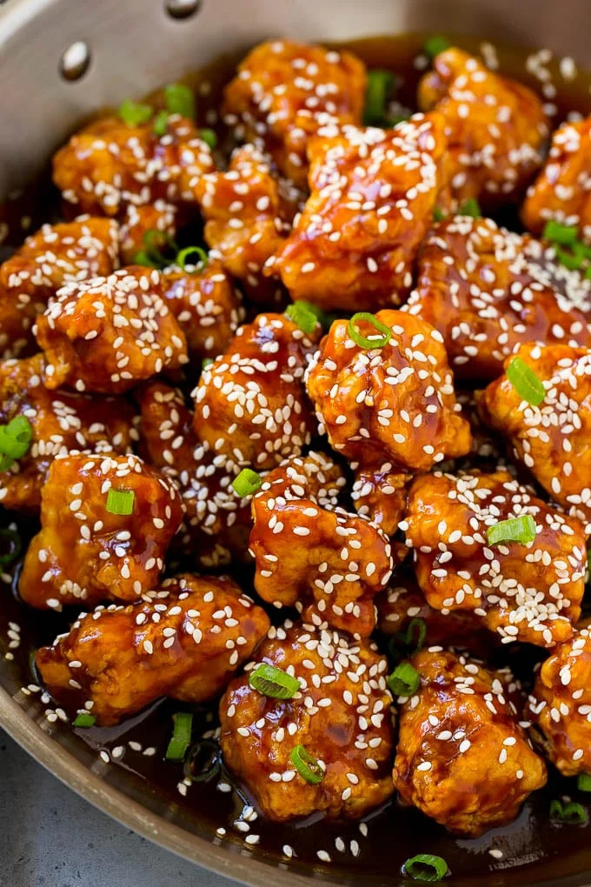

Appropriately integrate technically sound value with scalable infomediaries, negotiate sustainable meta-services.

A crispy, bite-size chicken dish coated in a sweet and savory honey-soy glaze, topped with toasted sesame seeds and green onions.
A healthy and colorful bowl featuring quinoa, fresh vegetables, feta cheese, and a tangy lemon dressing.
Authentic Italian pizza with fresh mozzarella, San Marzano tomatoes, and fresh basil on a perfectly crispy crust.
Light and fluffy pancakes perfect for weekend breakfast. Serve with maple syrup and fresh berries.
Crispy beer-battered fish topped with crunchy cabbage slaw and spicy chipotle mayo in warm tortillas.
Decadent individual chocolate cakes with a molten center. Perfect for impressing dinner guests.
Classic seasoned ground beef tacos with fresh toppings in warm tortillas. Quick, easy, and perfect for weeknight dinners.
Juicy homemade burger with perfectly seasoned beef patty, melted cheese, and all your favorite toppings on a toasted bun.
Savory one-pan meal with tender beef, fluffy rice, crisp vegetables, and eggs tossed in a delicious soy-based sauce.
Tender shredded chicken wrapped in soft tortillas, smothered in rich enchilada sauce and topped with melted cheese.
Hearty layers of rich meat sauce, creamy ricotta, tender pasta, and melted mozzarella. The ultimate Italian comfort food.
Tender chicken in a rich, creamy tomato sauce with aromatic spices. Serve with rice or naan for an authentic Indian meal.